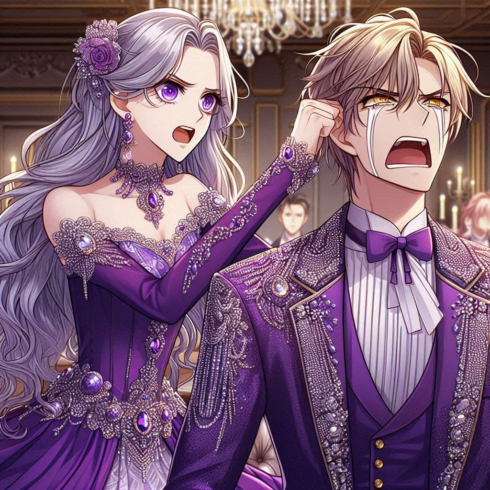
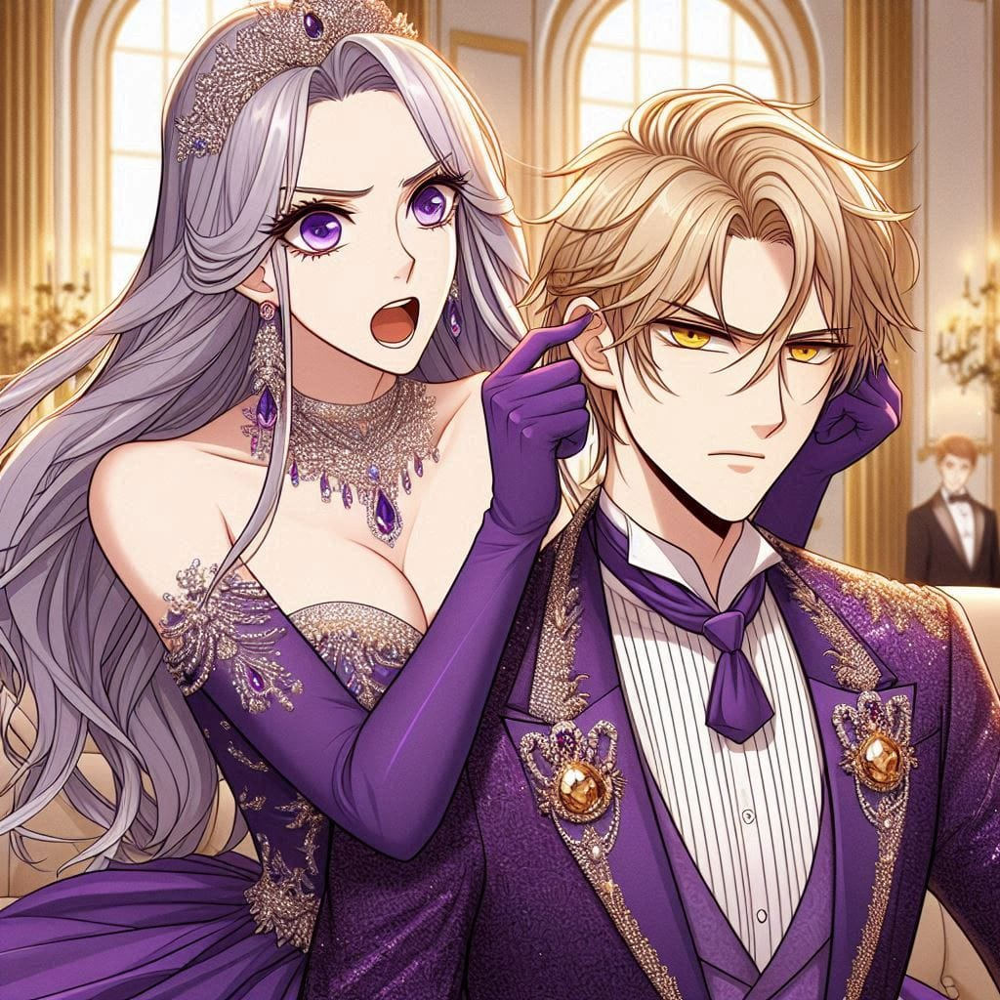

Saintana's Arrival
The moment had finally arrived. The grand hall, adorned with opulent chandeliers and exquisite tapestries, fell into hushed anticipation. The guards announced with great reverence:
"Now presenting, Lady Saintana, accompanied by Emperor Taintai IX and Aide Rimika."
The crowd’s attention shifted instantly, momentarily forgetting about Jayranio. As the guests respectfully stepped aside to clear a path, Jayranio instinctively melded into the crowd, avoiding direct interaction for now.
Saintana entered with an air of undeniable regality. She wore a striking, bold, non-frilled gown in royal purple, shimmering under the golden glow of the chandeliers. A sword rested elegantly at her waist, symbolizing her allegiance to the knight order. Her jewelry was minimal yet perfectly accentuated her ethereal beauty. Her silver locks cascaded in soft waves, gleaming like moonlight, and her cold yet dazzling eyes held an enigmatic allure.
A hushed awe settled over the hall at the sheer presence she commanded. However, amidst the crowd, Jayranio stood frozen—not out of shock, but overwhelmed with emotion.
He whispered under his breath, "Milli..."
Saintana felt a strange sensation, as if she had heard someone calling that name, but she dismissed it as just another fleeting vision. With unwavering composure, she ascended the grand staircase to preside over the banquet.
(Despite her outward calm, an internal turmoil churned within her. Tonight, she was expected to share her first dance with Jayranio—a moment she had once vowed to reserve for her beloved alone. A promise that now teetered on the brink of breaking.)
She took a delicate sip from her glass, steeling herself for what lay ahead. Then, sweeping her sharp, eagle-like gaze over the crowd, she prepared to speak—only to suddenly halt.
She saw him.
Across the sea of faces, Saintana’s eyes locked onto Jayranio’s.
For the first time in years, her impenetrable facade cracked. Her breath hitched, and for a brief moment, she was motionless, her expression unreadable.
Taintai, observing this unusual pause, furrowed his brows.
What’s wrong with her today?
Then, to everyone’s utter astonishment, tears welled up in Saintana’s eyes, spilling down her porcelain cheeks in silent streams. Gasps rippled through the hall. Even Rimika nearly lost consciousness at the sight of the legendary, emotionless Saintana weeping so openly.
Jayranio, unable to tear his gaze away, felt a deep, wrenching pain at the sight of her tears. His heart pounded. The weight of ten years of separation bore down upon him like an avalanche.
Saintana, still hesitant, needed confirmation. It had been a decade—faces could change. Was it truly him?
Then, as if guided by fate, she began to sing. A song only she and Jayranio knew. A song that did not belong to this world. A song she once used to sing with him in the mountains from her one of the past lives. Her voice, both melodic and agonizing, filled the hall with haunting beauty:
“If I am not here with you, then who will be?
My soul shall suffer, my heart will weep. 🎶🎶
If I am not here with you, then who will be?
My soul shall suffer, my heart will weep. 🎶🎶
I wither away, lost without you, 🎶
A fool wandering with no refuge. 🎶🎶
If we part, even the heavens will cry, 🎶
For love like ours, no fate can deny. 🎶🎶”
A profound silence enveloped the room. Many guests found themselves shedding tears, overcome by the sorrow woven into the melody. Taintai, still confused, chose not to interrupt.
Then, a voice joined hers—strong yet trembling with emotion.
Jayranio stepped forward, tears glistening in his eyes as he continued:
“Without you, the days feel hollow, 🎶🎶
Food is tasteless, thirst unquenched. 🎶🎶
You are the path, I am the way, 🎶🎶
No force can break us, come what may. 🎶🎶
Without the sun, no dawn shall rise, 🎶🎶
But trust in fate, the gods are wise. 🎶🎶
If I am not here with you, then who will be?
My soul shall suffer, my heart will weep. 🎶🎶”
The hall stood in stunned silence, the intensity of the moment holding them captive. Even hardened warriors wiped at their eyes, while noble ladies sobbed into their handkerchiefs.
And then, Saintana smiled.
A radiant, breathtaking smile—one that could make hearts race and time pause. Tears still streamed down her face, but they carried the warmth of joy. Jayranio mouthed softly, "My Milli."
Reading his lips, Saintana let out a joyous laugh. A genuine, heart-melting laugh.
The room held its breath, witnessing a moment that defied logic.
Then, without a second thought, Saintana lifted the hem of her gown, set down her glass, and took several steps back. Jayranio immediately understood. He stepped forward.
With unwavering trust, Saintana sprinted from the top of the grand staircase and leapt into the air. Gasps echoed as she soared—only for Jayranio to catch her effortlessly in his arms.
A collective sigh of relief and admiration swept through the hall as the two spun in an embrace, lost in each other’s presence. A moment of pure, unfiltered love.
Yet, just as the romance reached its peak—
With a sudden shift, Saintana grabbed Jayranio by the collar and threw him to the ground. A loud thud echoed. Then, without hesitation, she seized his ear and twisted it mercilessly.
The hall erupted in stunned disbelief. Plates clattered as startled waiters dropped their trays.
The genre had abruptly shifted from romance to action.
(Author: what do you think she will give him a peck or what? My naughty readers.😏)
“Why didn’t you come sooner?! Why now? WHY?!” Saintana roared, twisting his ear further. “If you regained your memory, what were you waiting for? There aren’t exactly multiple women in this empire with silver hair and purple eyes! Were you waiting for my 101st reincarnation?!”
 Jayranio, completely overwhelmed, could only gape at her, utterly speechless.
Among the crowd, one man couldn’t hold back his laughter. Suren, the personal aide of Emperor Himminsa, struggled to keep a straight face.
Seeing him, Saintana narrowed her eyes. “And you find this funny?” she challenged.
Jayranio frantically shook his head at Suren, warning him to not utter a single word.
Suren smirked. “My lady, let me introduce myself. I am Suren, the personal aide of Emperor Himminsa.”
Then, with a grin, he added, “The reason our lord didn’t reach out sooner was because of his obsession with the name ‘Milli’—your name.”
Saintana’s brows furrowed. “Explain.”
Suren smirked at Jayranio’s frantic protests. “Every time I tried to educate him about you, he’d rage and yell—‘Who the hell is this Saintana?! I don’t care about this nonsense!’”
The hall fell into murmurs. Saintana’s expression darkened momentarily—but then, to Jayranio’s horror, she smiled.
Jayranio started apologizing profusely. “Milli, let me explain later, but can we handle this crowd first?”
Saintana suddenly realized the sheer spectacle she had created.
Her gaze shifted to Taintai for help. He simply raised his hands and smirked.
You expect me to fix this? Now?